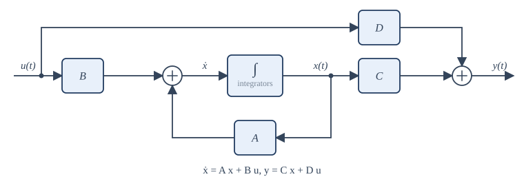
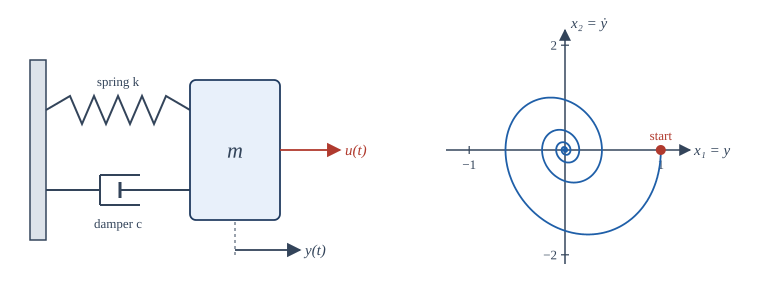

Chapter 13: State-Space Models¶
An internal description of systems: state equations, their solution, transfer functions and a first look at state feedback
Learning outcomes
After this chapter you should be able to:
- explain what the state of a system is and why an internal description is useful;
- write state equations for mechanical and electrical systems and for a transfer function in canonical form;
- compute the transfer function \(C(sI - A)^{-1}B + D\) and identify the poles as eigenvalues of \(A\);
- solve the state equations using the matrix exponential, and decide stability from the eigenvalues;
- write and solve discrete-time state equations, and discretise a continuous-time model exactly for a piecewise-constant input;
- place the poles of a simple system by state feedback.
13.1 Why describe the inside of a system?¶
Everything so far has described LTI systems from the outside: by an impulse response, a frequency response or a transfer function, each of which relates the output to the input and says nothing about what happens inside. This external view is powerful, but it has limits:
- it assumes the system starts at rest, while real systems often start with stored energy;
- it is awkward for systems with several inputs and several outputs;
- it hides internal variables (a current inside a circuit, the velocity of a motor) that may matter in their own right, for example because they must not exceed a limit;
- it does not extend to nonlinear or time-varying systems, while numerical simulation of such systems is naturally written in terms of internal variables.
The state-space description addresses all four. It is the language of modern control engineering and of numerical simulation, and it connects signals and systems with linear algebra.
The state of a system at time \(t_0\) is the smallest set of numbers that, together with the input for \(t \ge t_0\), determines the output for all \(t \ge t_0\). For a mass on a spring, the state is the position and the velocity: knowing both now, and the force from now on, fixes the whole future motion. In a circuit, the state is the set of capacitor voltages and inductor currents, the quantities that store energy. The number of state variables is the order of the system, and it equals the number of independent energy stores.
13.2 State equations¶
A continuous-time LTI system with input \(u(t)\), output \(y(t)\) and state vector \(\mathbf{x}(t)\) of \(N\) components is described by
The first is the state equation: \(N\) first-order differential equations, telling how the state changes. The second is the output equation, telling how the output is read from the state. \(A\) is \(N\times N\), \(B\) is \(N\times1\), \(C\) is \(1\times N\) and \(D\) is a scalar (with several inputs and outputs, \(B\), \(C\) and \(D\) become matrices of the appropriate sizes, and nothing else changes). The input of this chapter is called \(u\), following the custom of control engineering, because \(\mathbf{x}\) is now the state.

Example 13.1 A mass-spring-damper
A mass \(m\) on a spring of stiffness \(k\) with a damper of coefficient \(c\), pushed by a force \(u(t)\), has position \(y(t)\) obeying \(m\ddot{y} + c\dot{y} + ky = u\). Choose the state variables \(x_1 = y\) (position) and \(x_2 = \dot{y}\) (velocity). Then
or, in matrices, with the output \(y = x_1\):
With \(m = 1\), \(c = 3\) and \(k = 2\) (the system of Example 10.9), \(A = \begin{bmatrix} 0 & 1 \\ -2 & -3 \end{bmatrix}\).

The pair \((x_1, x_2)\) can be drawn as a point in the state space (here a plane, the phase plane). As time passes the point traces a trajectory. For a damped oscillator released from rest away from equilibrium, the trajectory spirals in to the origin (Figure 13.2): the position and the velocity oscillate a quarter-cycle out of step while the damper removes energy.
Example 13.2 An RLC circuit
A series circuit of a resistor \(R\), an inductor \(L\) and a capacitor \(C_0\), driven by a voltage \(u(t)\), with the capacitor voltage as output. The energy stores are the inductor (current \(i\)) and the capacitor (voltage \(v\)). The element laws give \(C_0\dot{v} = i\) and \(L\dot{i} = u - Ri - v\). With \(\mathbf{x} = [v, i]^T\):
The structure is the same as for the mass-spring-damper, which is why the two systems behave alike: inductance plays the part of mass, resistance of damping, and the reciprocal of capacitance of stiffness.
13.3 From a transfer function to state equations¶
Any proper rational transfer function can be turned into state equations; the result is called a realisation. One standard form, the controllable canonical form, reads the matrices off the coefficients. For
a realisation is
The pattern extends to any order: ones above the diagonal, the negated denominator coefficients in the last row, the numerator coefficients in \(C\). (If the numerator has the same degree as the denominator, divide first; the constant quotient becomes \(D\).) The state variables are the output of a chain of integrators driven by an auxiliary signal, which is why this form is also called the phase-variable form. Example 13.1 is this form for \(H(s) = \frac{1}{s^2 + 3s + 2}\).
Realisations are not unique. If \(T\) is any invertible matrix, the new state \(\mathbf{z} = T\mathbf{x}\) obeys equations with matrices \(TAT^{-1}\), \(TB\), \(CT^{-1}\) and \(D\), and gives exactly the same input-output behaviour. Choosing a good set of state variables (physical ones, or ones that decouple the equations) is part of the engineer's craft.
13.4 From state equations to the transfer function¶
Take Laplace transforms of the state equations with zero initial state: \(s\mathbf{X}(s) = A\mathbf{X}(s) + BU(s)\), so \((sI - A)\mathbf{X}(s) = BU(s)\) and
The inverse \((sI - A)^{-1}\) equals the adjugate of \(sI - A\) divided by its determinant, so the denominator of \(H(s)\) is \(\det(sI - A)\), the characteristic polynomial of \(A\). Hence:
Key idea
The poles of the transfer function are eigenvalues of \(A\). (Every pole is an eigenvalue; an eigenvalue can fail to appear as a pole only if it is cancelled by a zero, which happens when part of the state cannot be affected by the input or cannot be seen in the output.)
Example 13.3 Transfer function of the mass-spring-damper
With \(A = \begin{bmatrix} 0 & 1 \\ -2 & -3 \end{bmatrix}\):
Then \(C(sI - A)^{-1}B\) picks the \((1, 2)\) entry: \(H(s) = \dfrac{1}{s^2 + 3s + 2}\), as expected. The eigenvalues of \(A\) are the roots of \(s^2 + 3s + 2\), namely \(-1\) and \(-2\).
13.5 Solving the state equations¶
For a scalar equation \(\dot{x} = ax + bu\), the solution is \(x(t) = e^{at}x(0) + \int_0^te^{a(t - \tau)}bu(\tau)\,d\tau\). The matrix equation has the same solution with the matrix exponential in place of \(e^{at}\):
where
The first term is the zero-input response, the free motion from the initial state; the second is the zero-state response, a convolution of the input with \(e^{At}B\). The output is \(y = C\mathbf{x} + Du\), and the impulse response is \(h(t) = Ce^{At}B\,u(t) + D\delta(t)\).
There are two practical ways to compute \(e^{At}\):
- By Laplace transform: \(e^{At}\) is the inverse transform of \((sI - A)^{-1}\), entry by entry.
- By eigenvalues: if \(A = V\Lambda V^{-1}\) with distinct eigenvalues \(\lambda_i\) on the diagonal of \(\Lambda\), then \(e^{At} = V\,\mathrm{diag}(e^{\lambda_it})\,V^{-1}\). Each entry of \(e^{At}\) is a combination of the modes \(e^{\lambda_it}\).
Example 13.4 Free response of the mass-spring-damper
Inverting the entries of \((sI - A)^{-1}\) from Example 13.3 by partial fractions:
At \(t = 0\) this is the identity, as it must be. Released from \(y = 1\) at rest, \(\mathbf{x}(0) = [1, 0]^T\), the position is the first entry of \(e^{At}\mathbf{x}(0)\): \(y(t) = 2e^{-t} - e^{-2t}\). It starts at 1 with zero slope and decays without oscillating, because both modes are real.
Stability¶
Since every entry of \(e^{At}\) is a combination of the modes \(e^{\lambda_it}\) (times powers of \(t\) for repeated eigenvalues), the free response decays to zero from every initial state if and only if every eigenvalue of \(A\) has a negative real part. This internal stability implies BIBO stability; the converse fails only when an unstable mode is hidden by a pole-zero cancellation, which is precisely the kind of danger that the state-space view exposes and the transfer function conceals.
13.6 Discrete-time state equations¶
A DT LTI system has the state equations
They need no calculus: starting from \(\mathbf{x}[0]\), iterate. The solution is
the transfer function is \(H(z) = C(zI - A)^{-1}B + D\), and the system is internally stable if and only if every eigenvalue of \(A\) lies strictly inside the unit circle, because the free response is built from the modes \(\lambda_i^n\).
Any difference equation can be put in this form; the delay elements of a block diagram hold the state, just as integrators do in continuous time.
Exact discretisation¶
Digital controllers and simulators update a continuous system every \(T\) seconds, holding the input constant in between (a zero-order hold, Section 9.4). Over one interval, the CT solution with constant \(u\) gives exactly
where \(\mathbf{x}[n] = \mathbf{x}(nT)\). When \(A\) is invertible, \(B_d = A^{-1}(e^{AT} - I)B\). The eigenvalues of \(A_d\) are \(e^{\lambda_iT}\): the mapping \(z = e^{sT}\) of Chapter 11 once more, sending stable CT modes to stable DT modes. Unlike a crude approximation such as Euler's method (\(A_d \approx I + AT\)), this discretisation is exact at the sampling instants for any \(T\).
13.7 A first look at state feedback¶
If all the state variables can be measured, the input can be computed from them: \(u = -K\mathbf{x} + r\), where \(K\) is a row of gains and \(r\) a reference input. Substituting into the state equation,
The closed-loop dynamics are governed by the eigenvalues of \(A - BK\), and for a system in controllable canonical form (or any controllable system, one whose every state can be steered by the input) the gains can place these eigenvalues anywhere we like.
Example 13.5 Placing the poles of a double integrator
A mass with no spring or damping, pushed by a force, obeys \(\ddot{y} = u\) (with \(m = 1\)). With \(\mathbf{x} = [y, \dot{y}]^T\), \(A = \begin{bmatrix} 0 & 1 \\ 0 & 0 \end{bmatrix}\) and \(B = \begin{bmatrix} 0 \\ 1 \end{bmatrix}\). Both eigenvalues are 0: left alone, the mass drifts.
With \(K = [k_1, k_2]\), \(A - BK = \begin{bmatrix} 0 & 1 \\ -k_1 & -k_2 \end{bmatrix}\), whose characteristic polynomial is \(s^2 + k_2s + k_1\). To place the poles at \(-2 \pm 2j\), match \(s^2 + 4s + 8\): \(k_1 = 8\), \(k_2 = 4\). The controller pushes back in proportion to the position (a virtual spring) and to the velocity (a virtual damper), giving \(\omega_n = \sqrt8\) and \(\zeta = 1/\sqrt2\).
When not every state can be measured, an observer estimates the state from the output; the dual notion of observability (whether the state can be deduced from the output) decides when this is possible. These topics belong to a course in control, and Chapter 14 shows the setting in which they are used.
13.8 State-space computations in NumPy¶
The program below builds the model of Example 13.1, checks its eigenvalues and transfer function, discretises it exactly with \(T = 0.1\) s, simulates the step response, and compares the result with the formula \(y(t) = \frac12 - e^{-t} + \frac12e^{-2t}\) of Example 10.9. Finally it checks the pole placement of Example 13.5.
import numpy as np
# Mass-spring-damper y'' + 3y' + 2y = u as a state-space model, x = [y, y']
A = np.array([[0.0, 1.0], [-2.0, -3.0]])
B = np.array([[0.0], [1.0]])
C = np.array([[1.0, 0.0]])
D = 0.0
print("eigenvalues of A:", np.linalg.eigvals(A))
# Transfer function C (sI - A)^-1 B + D at s = 2j, compared with 1 / (s^2 + 3s + 2)
s = 2j
H = (C @ np.linalg.solve(s * np.eye(2) - A, B))[0, 0] + D
print("H(j2) from state space:", np.round(H, 4), " from formula:", np.round(1 / (s**2 + 3 * s + 2), 4))
def expm(M):
"""Matrix exponential by eigen-decomposition (fine when M has distinct eigenvalues)."""
w, V = np.linalg.eig(M)
return (V @ np.diag(np.exp(w)) @ np.linalg.inv(V)).real
# Exact discretisation for a piecewise-constant input (zero-order hold), T = 0.1 s
T = 0.1
Ad = expm(A * T)
Bd = np.linalg.solve(A, Ad - np.eye(2)) @ B # A^-1 (e^{AT} - I) B
print("Ad =", np.round(Ad, 5).tolist())
print("Bd =", np.round(Bd.ravel(), 5).tolist())
# Step response by iterating x[n+1] = Ad x[n] + Bd u[n], against y(t) = 1/2 - e^-t + e^-2t / 2
x = np.zeros((2, 1))
ys = []
for n in range(51):
ys.append((C @ x)[0, 0])
x = Ad @ x + Bd * 1.0
for t in (0.5, 1.0, 2.0, 5.0):
exact = 0.5 - np.exp(-t) + 0.5 * np.exp(-2 * t)
print(f"t = {t:3.1f}: simulated {ys[int(round(t / T))]:.6f}, exact {exact:.6f}")
# State feedback u = -K x on the double integrator y'' = u: place poles at -2 +/- 2j
A2 = np.array([[0.0, 1.0], [0.0, 0.0]])
K = np.array([[8.0, 4.0]]) # from s^2 + 4s + 8
print("closed-loop eigenvalues:", np.linalg.eigvals(A2 - B @ K))
eigenvalues of A: [-1.+0.j -2.+0.j]
H(j2) from state space: (-0.05-0.15j) from formula: (-0.05-0.15j)
Ad = [[0.99094, 0.08611], [-0.17221, 0.73262]]
Bd = [0.00453, 0.08611]
t = 0.5: simulated 0.077409, exact 0.077409
t = 1.0: simulated 0.199788, exact 0.199788
t = 2.0: simulated 0.373823, exact 0.373823
t = 5.0: simulated 0.493285, exact 0.493285
closed-loop eigenvalues: [-2.+2.j -2.-2.j]
The simulated and exact values agree to all six decimals, because the discretisation is exact for a step input, which is constant between samples. The eigen-decomposition expm is adequate here; for general matrices (repeated eigenvalues, or nearly so) use scipy.linalg.expm, which is numerically robust.
13.9 Summary¶
Summary
- The state is the smallest set of variables that, with future inputs, fixes the future; physically, the energy stores.
- CT state equations \(\dot{\mathbf{x}} = A\mathbf{x} + Bu\), \(y = C\mathbf{x} + Du\); DT state equations \(\mathbf{x}[n+1] = A\mathbf{x}[n] + Bu[n]\).
- A transfer function can be realised in controllable canonical form; realisations are not unique (\(TAT^{-1}\), \(TB\), \(CT^{-1}\)).
- \(H(s) = C(sI - A)^{-1}B + D\); the poles are eigenvalues of \(A\).
- \(\mathbf{x}(t) = e^{At}\mathbf{x}(0) + \int_0^te^{A(t-\tau)}Bu(\tau)d\tau\); the modes are \(e^{\lambda_it}\). Internal stability: all eigenvalues in the left half-plane (CT) or inside the unit circle (DT).
- Exact ZOH discretisation: \(A_d = e^{AT}\), \(B_d = A^{-1}(e^{AT} - I)B\); eigenvalues map by \(z = e^{sT}\).
- State feedback \(u = -K\mathbf{x} + r\) moves the eigenvalues to those of \(A - BK\).
13.10 Exercises¶
Exercise 13.1
Write state equations for \(\ddot{y} + 5\dot{y} + 6y = 2u\) with \(x_1 = y\), \(x_2 = \dot{y}\).
Answer
\(A = \begin{bmatrix} 0 & 1 \\ -6 & -5 \end{bmatrix}\), \(B = \begin{bmatrix} 0 \\ 2 \end{bmatrix}\), \(C = \begin{bmatrix} 1 & 0 \end{bmatrix}\), \(D = 0\).
Exercise 13.2
Find the eigenvalues of the \(A\) in Exercise 13.1 and decide stability.
Answer
\(\det(sI - A) = s^2 + 5s + 6 = (s + 2)(s + 3)\): eigenvalues \(-2\) and \(-3\). Stable.
Exercise 13.3
Give a controllable canonical realisation of \(H(s) = \dfrac{s + 4}{s^2 + 2s + 10}\).
Answer
\(A = \begin{bmatrix} 0 & 1 \\ -10 & -2 \end{bmatrix}\), \(B = \begin{bmatrix} 0 \\ 1 \end{bmatrix}\), \(C = \begin{bmatrix} 4 & 1 \end{bmatrix}\), \(D = 0\).
Exercise 13.4
Compute \(H(s)\) for \(A = \begin{bmatrix} -1 & 0 \\ 0 & -4 \end{bmatrix}\), \(B = \begin{bmatrix} 1 \\ 1 \end{bmatrix}\), \(C = \begin{bmatrix} 2 & 3 \end{bmatrix}\), \(D = 0\).
Answer
\(A\) is diagonal, so \((sI - A)^{-1} = \mathrm{diag}\left(\frac{1}{s+1}, \frac{1}{s+4}\right)\) and \(H(s) = \frac{2}{s + 1} + \frac{3}{s + 4} = \frac{5s + 11}{(s + 1)(s + 4)}\).
Exercise 13.5
For the diagonal \(A\) of Exercise 13.4, write \(e^{At}\) and the free response from \(\mathbf{x}(0) = [1, -1]^T\), with output \(y = C\mathbf{x}\).
Answer
\(e^{At} = \mathrm{diag}(e^{-t}, e^{-4t})\), so \(\mathbf{x}(t) = [e^{-t}, -e^{-4t}]^T\) and \(y(t) = 2e^{-t} - 3e^{-4t}\).
Exercise 13.6
A DT system has \(A = \begin{bmatrix} 0.5 & 1 \\ 0 & 0.8 \end{bmatrix}\). Is it stable?
Answer
\(A\) is triangular, so its eigenvalues are 0.5 and 0.8, both inside the unit circle: stable.
Exercise 13.7
Iterate \(\mathbf{x}[n+1] = A\mathbf{x}[n]\) with \(A = \begin{bmatrix} 0 & 1 \\ -0.5 & 1 \end{bmatrix}\) from \(\mathbf{x}[0] = [1, 0]^T\) for two steps.
Answer
\(\mathbf{x}[1] = [0, -0.5]^T\); \(\mathbf{x}[2] = [-0.5, -0.5]^T\).
Exercise 13.8
A scalar CT system \(\dot{x} = -2x + u\) is discretised with \(T = 0.5\) s and a zero-order hold. Find \(A_d\) and \(B_d\).
Answer
\(A_d = e^{-1} \approx 0.368\); \(B_d = \frac{e^{-1} - 1}{-2} = \frac{1 - e^{-1}}{2} \approx 0.316\).
Exercise 13.9
For the double integrator of Example 13.5, find the gains that place both closed-loop poles at \(-3\).
Answer
Match \(s^2 + k_2s + k_1 = (s + 3)^2 = s^2 + 6s + 9\): \(k_1 = 9\), \(k_2 = 6\).
Exercise 13.10
Show that the similarity transformation \(\mathbf{z} = T\mathbf{x}\) does not change the transfer function.
Answer
\(CT^{-1}(sI - TAT^{-1})^{-1}TB = CT^{-1}\left[T(sI - A)T^{-1}\right]^{-1}TB = CT^{-1}T(sI - A)^{-1}T^{-1}TB = C(sI - A)^{-1}B\).
13.11 Quiz¶
Check your understanding of Chapter 13
Exercise 1
For a mass on a spring, a suitable state is
- position and velocity
- force and mass
- position only
- acceleration only
Answer
position and velocity
Exercise 2
The poles of H(s) = C(sI − A)⁻¹B + D are
- eigenvalues of A
- entries of B
- zeros of C
- always real
Answer
eigenvalues of A
Exercise 3
How many state variables does a series RLC circuit need?
Answer
2 / two
One for each energy store: the capacitor voltage and the inductor current.
Exercise 4
A discrete-time state-space system is stable when every eigenvalue of A
- lies inside the unit circle
- has negative real part
- is real
- equals 1
Answer
lies inside the unit circle
Exercise 5
With state feedback u = −Kx + r, the closed-loop dynamics are set by the eigenvalues of
- A − BK
- A + K
- BK
- C − K
Answer
A − BK
Exercise 6
The exact discretisation of ẋ = Ax + Bu with a zero-order hold has A_d = e^(___).
Answer
AT / A T
Exercise 7
What is e^(At) at t = 0?
Answer
I / the identity / identity matrix / the identity matrix